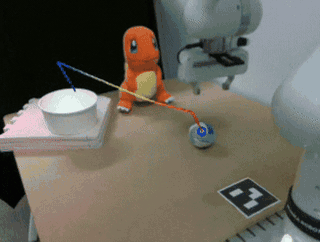
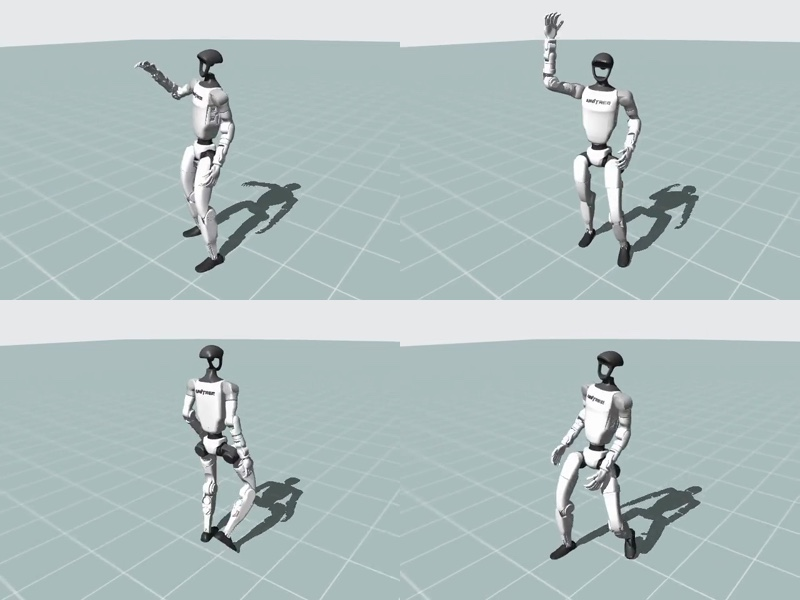
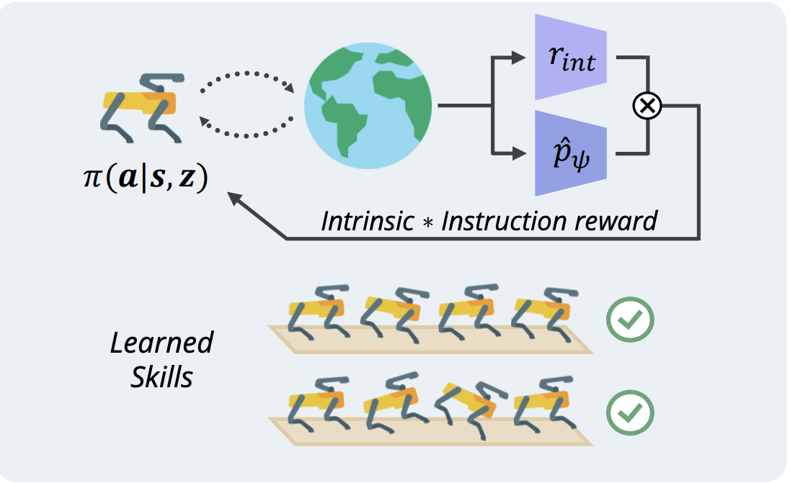
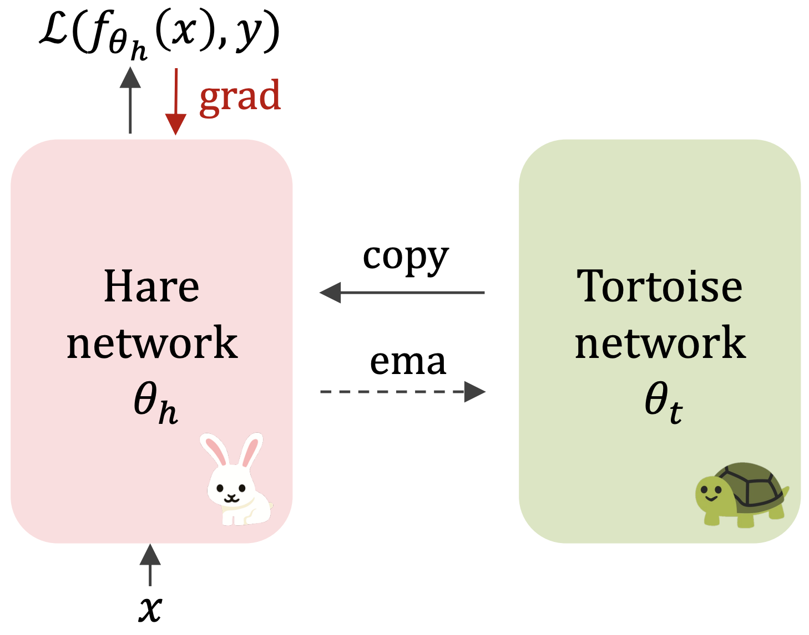
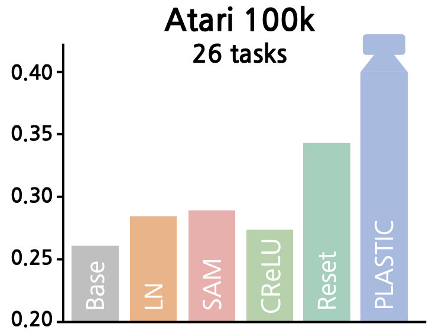
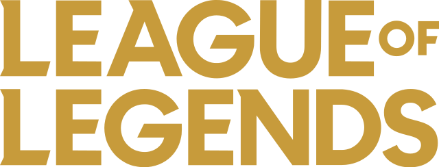

Publications

Dongyoon Hwang*, Byungkun Lee*, Dongjin Kim*, Hyojin Jang, Hoiyeong Jin, Jueun Mun, Minho Park, Hojoon Lee, Hyunseung Kim, Jaegul Choo
IROS'26.
project page / paper / code

Kyungmin Lee†, Sibeen Kim†, Youngdo Lee, Minho Park, Hyunseung Kim, Dongyoon Hwang, Donghu Kim, Hojoon Lee, Jaegul Choo
Preprint.
project page / paper

Hojoon Lee*, Dongyoon Hwang*, Donghu Kim, Hyunseung Kim, Jun Jet Tai, Kaushik Subramanian, Peter R. Wurman, Jaegul Choo, Peter Stone, Takuma Seno.
ICLR'25 (Spotlight).
project page / paper

Hyunseung Kim, Byungkun Lee, Hojoon Lee, Dongyoon Hwang, Donghu Kim, Jaegul Choo
NeurIPS'24.
project page / paper

Hojoon Lee, Hyeonseo Cho, Hyunseung Kim, Donghu Kim, Dugki Min, Jaegul Choo, Clare Lyle
ICML'24.
paper / code

Dongyoon Hwang*, Byungkun Lee*, Hojoon Lee, Hyunseung Kim, Jaegul Choo
ICML'24.
paper

Hyunseung Kim*, Byungkun Lee*, Hojoon Lee, Dongyoon Hwang, Sejik Park, Kyushik Min, Jaegul Choo
NeurIPS'23.
project page / paper / code / poster

Hojoon Lee*, Hanseul Cho*, Hyunseung Kim*, Daehoon Gwak, Joonkee Kim, Jaegul Choo, SeYoung Yun, Chulhee Yun
NeurIPS'23.
paper / code / slide / poster

Hojoon Lee*, Dongyoon Hwang*, Hyunseung Kim, Byungkun Lee, Jaegul Choo
WWW'22.
paper / code / poster